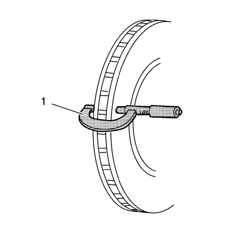

Inspección de la superficie y desgaste del rotor del freno
Advertencia : Consulte Advertencia relacionada con el polvo procedente de los frenos en la sección Prólogo
- Si la superficie de fricción interior del rotor de freno no es accesible, vuelva a colocar y sujete la pinza con las pastillas de freno. Consultar Sustitución de las pastillas de freno del disco delantero .
- Limpie las superficies de fricción del rotor de freno con alcohol desnaturalizado o un limpiador de frenos equivalente autorizado.
- Revise las superficies de fricción del rotor de freno para comprobar si presentan las siguientes anomalías en la superficie de frenado:
| • | Óxido o picadura fuerte |
| | El óxido de superficie ligero se puede eliminar con un disco abrasivo. El óxido y/o picadura de la superficie se debe eliminar repasando el rotor de freno. |
| • | Grietas o puntos calientes |
| • | Demasiada decoloración azulada. |
- Si las superficies de fricción del rotor de freno presentan una o más de las anomalías de la superficie de frenado mencionadas, es necesario repasar o sustituir el rotor de freno.

- Usando un micrómetro de exteriores (1) calibrado en milésimas de milímetro o diezmilésimas de pulgada, mida y registre la profundidad de los arañazos o de cualquier surco que haya en las superficies de fricción del rotor de freno.
- Compare la profundidad de las estrías registradas con las siguientes especificaciones:
Especificaciones
Profundidad máxima permitida para los arañazos en el rotor de freno: 1,50 mm (0,059 pulg.).
- Si la profundidad de los arañazos en el rotor del disco supera el valor especificado, o si el disco está demasiado arañado, será necesario repasar o sustituir el rotor de freno.
| © Copyright Chevrolet Europe. All rights reserved |